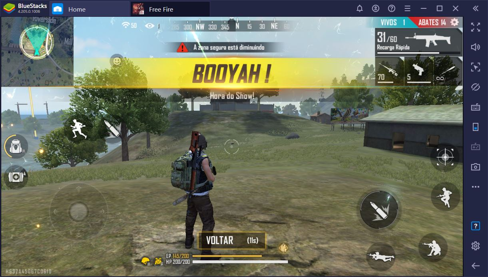

o que é ?

Free Fire é um jogo eletrônico mobile de ação-aventura do gênero battle royale,
criado pela desenvolvedora vietnamita 111dots Studio e publicado pela Garena.
O jogo obteve um beta aberto em novembro de 2017
e foi lançado oficialmente para Android de iOS em 4 de dezembro de 2017.
O jogo consiste de até no total de cinquenta jogadores que caem de paraquedas em uma ilha em busca de
armas e equipamentos a fim de matar os outros jogadores.
Os jogadores escolhem à vontade a posição
inicial, pegam armas e suprimentos para aumentar o tempo de vida na batalha, ele foi Inspirado em PlayerUnknown’s Battlegrounds (PUBG.
como funciona ?

Garena Free Fire é um jogo
eletrônico de ação-aventura do gênero battle royale visto numa perspectiva em terceira pessoa.
primeiramente o jogador deve criar uma conta pessoal por meio de google,facebook ou vk.
Logo após sincronizara conta e inicia o jogo
o jogador pode iniciar uma partida clicando no botão “Modo Clássico” ou "Partida
Ranqueada" da Bermuda (Campo de batalha) e então aguardar até que o avião voe por cima da ilha
Enquanto o avião estiver sobrevoando sobre a ilha o jogador pode pular onde ele desejar, possibilitando assim que ele escolha um local estratégico para pousar longe dos inimigos.
Após pousar, o jogador então deve sair a procura de armas e itens utilitários.
Equipamento médico, armas de médio e grande porte, granadas, colete a prova de bala, capacete de proteção, mochila, facão, dentre outros vários itens apresentados no jogo podem ser encontrados pela ilha. O objetivo final do jogador é sobreviver numa ilha com no máximo 50 integrantes online e todos com o mesmo objetivo.
Para isso é necessário eliminar todos os adversários que o jogador encontrar pelo caminho e garantir que ele seja o único sobrevivente.
Mais sobre clique aqui